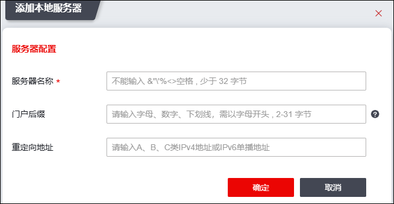
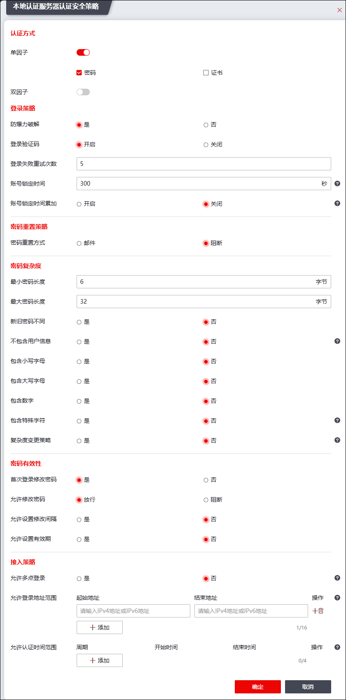
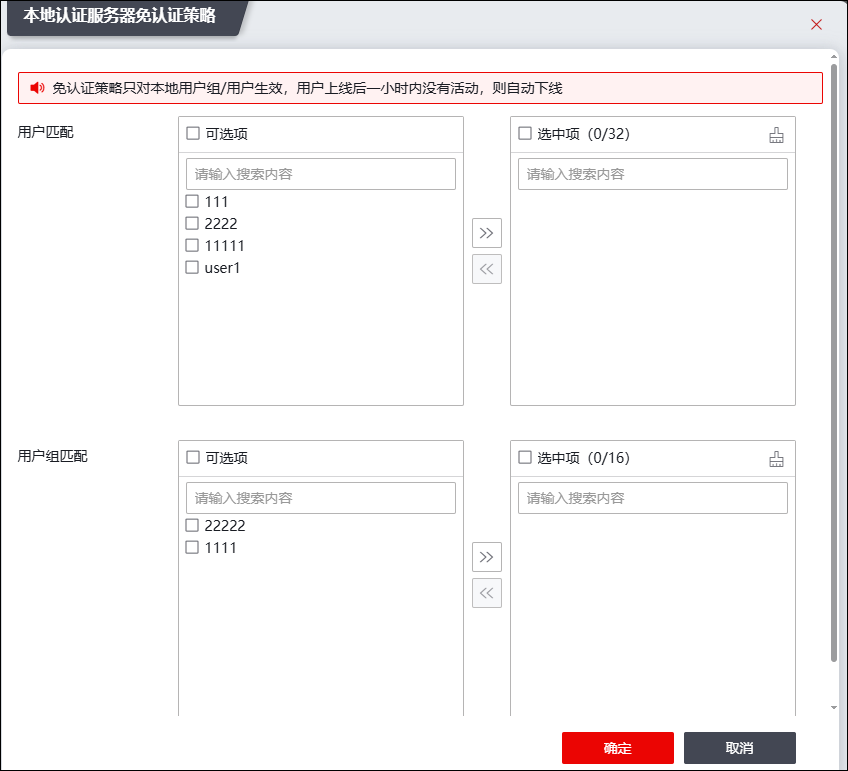
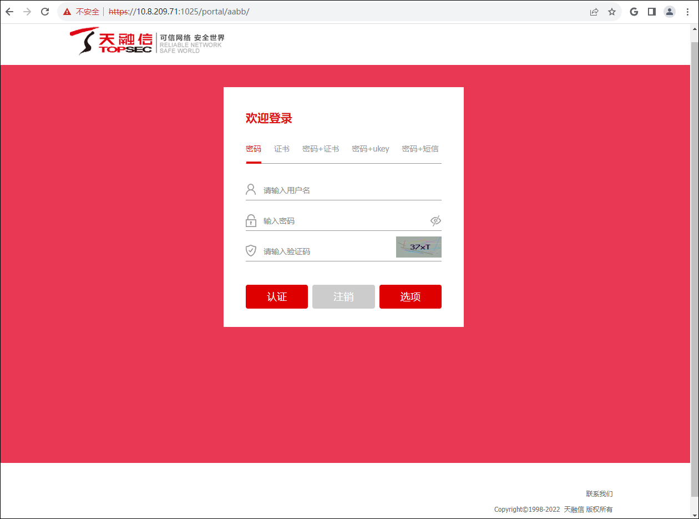

NGFW自身可以作为本地认证服务器，验证用户身份的合法性。
配置本地认证服务器的具体操作如下：
| 步骤1 | 选择 。 |
| 步骤2 | 添加本地服务器 |
1）点击“添加”，选择“本地服务器”，弹出“添加认证服务器”窗口。如下图所示。

各项参数的具体说明如下表所示。
参数 |
说明 |
|---|---|
服务器名称 |
输入本地认证服务器名称。名称处只能输入字母、数字，不能全为数字，且最大输入长度为30个字符，区分大小写。 |
门户后缀 |
设置门户后缀。门户后缀是用户进行身份认证的门户认证网站URL地址的一部分，门户认证网站的URL地址是“https://服务器地址:端口/portal/门户后缀/”。 |
重定向地址 |
输入重定向地址。 |
2）点击【确定】按钮完成本地认证服务器的添加。
| 步骤2 | 连通性测试 |
勾选服务器，点击“连通性测试”可检测该服务器与NGFW的连通性。
| 步骤3 | 配置认证安全策略。 |
1）勾选本地服务器，点击“认证安全策略”弹窗如下图所示。

各项参数的具体说明如下表所示。
|
参数 |
说明 |
|---|---|---|
认证方式 |
单因子 |
开启单因子认证，可选择密码认证或证书认证。 |
双因子 |
开启双因子认证，可选择密码+证书，密码+Ukey，密码+短信。 |
|
登录策略 |
防暴力破解 |
选择是否开启预防暴力破解功能。 |
登录验证码 |
选择是否开启登录验证码功能。 |
|
登录失败重试次数 |
设置允许用户认证失败的最大次数。超过此设定，账号将被锁定一定时间。失败次数取值范围为4-16的整数，默认值为5。 |
|
账号锁定时间 |
设置用户认证失败次数超过允许失败的最大次数时的锁定时长。在设定的锁定时间内，对应用户账户无法进行认证操作。锁定时间单位为秒，取值范围为300-1800，默认值为300。 |
|
账号锁定时间累加 |
选择当密码输入超过限定次数后，锁定时间是否累加。 |
|
密码重置策略 |
密码重置方式 |
设置用户忘记密码时，是否允许重置密码以及重置密码的方式。可选项有禁止和邮件两种，默认为禁止。 |
重置次数限制 |
选择是否设置密码重置次数限制。 |
|
最多重置次数 |
设置24小时内最多重置密码次数。允许用户每天重置密码的最大次数，取值范围为1-32的整数，默认值为5。 说明： 用户进行密码重置的次数受“24小时内最多重置密码次数”参数设置的控制，超出此限制后系统将拒绝执行密码重置操作。 |
|
重置间隔 |
设置密码每次重置之间得时间间隔。单位为分钟，取值范围为3-180的整数，默认值为180。 |
|
邮件服务器名称 |
选择密码重置邮件服务器。邮件服务器的相关配置参见 外发邮件账户。 |
|
密码复杂度 |
最小密码长度 |
设置密码最小长度限制。 |
最大密码长度 |
设置密码最大长度限制。密码长度范围为：6-32。 |
|
密码复杂程度 |
设置用户密码的复杂程度。可选项为：新旧密码不同、不包含用户信息和密码包含小写字母等。 |
|
密码有效性 |
首次登录修改密码 |
设置是否要求用户首次登录时修改管理员分配的密码。 |
允许修改密码 |
设置是否允许用户修改密码，若禁止则用户登录后不能自行修改密码。 |
|
允许设置修改间隔 |
设置密码有效期内每次密码修改之间必须间隔的时间。单位为天，取值范围为1-120的整数，默认值为30。 |
|
允许设置有效期 |
设置密码的有效期限。超过设置的有效期，用户再次登录时系统将出现修改密码提示。单位为天，取值范围为120-360的整数，默认值为120。 |
|
接入策略 |
允许多点登录 |
设置是否允许多点登录，勾选是表示允许；勾选否表示最大登录地点数为1。取值范围：2-1024。 |
允许登录地址范围 |
设置允许登录服务器的地址范围。格式示例：1.1.1.1-1.1.1.11,1.1.2.1-1.1.2.11表示两个IP范围，中间用英文都好隔开，最多16组。 |
|
允许认证时间范围 |
设置允许用户进行认证的时间范围。格式示例：12-00:00:00-23:59:59,4-00:00:00-11:59:59表示星期1和星期2的全体以及星期4的上午时间，最多4组。 |
2）点击【确定】按钮完成认证安全策略的配置。
| 步骤4 | 配置免认证策略。 |
免认证策略模块支持添加免认证用户/用户组。添加完成后，对应用户/用户组成员用户不需要进行认证，由于天融信防火墙通过用户的IP地址识别用户，所以只要用户满足用户访问策略（允许登录地址、允许在线时间范围），天融信防火墙便判定其身份认证通过。免认证用户/用户组成员上线后一小时内没有任何活动时，将会被自动下线。
1）勾选本地服务器，点击“免认证策略”，弹窗如下图所示。

“可选项”窗格中显示当前系统中的用户/用户组，“选中项”窗格中显示待设置为免认证的用户/用户组。
2）选中“可选项”窗格中的用户/用户组，点击将用户/用户组添加到“已选项”窗格中。
3）点击【确定】按钮，完成免认证策略的配置。
| 步骤5 | 用户认证。 |
1）在浏览器地址栏中输入门户登录地址，格式为“https://服务器地址:端口/portal/门户后缀/”（结尾“/”不能省略），例如：https://172.18.7.36:1025/portal/suffix/。进入门户界面，如下图所示。

2）输入用户的用户名、密码和验证码，点击【认证】按钮，NGFW即可对该用户进行身份认证。